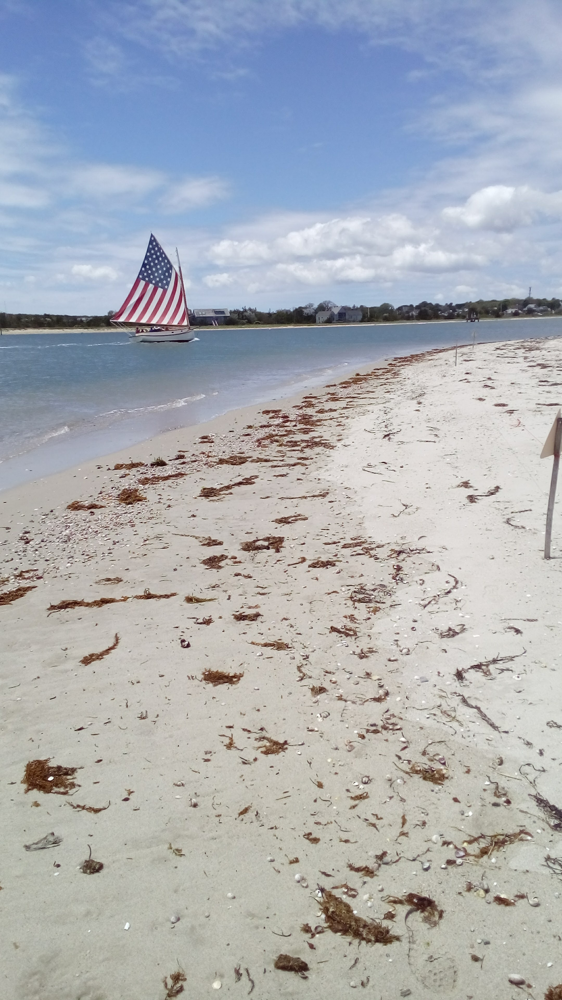
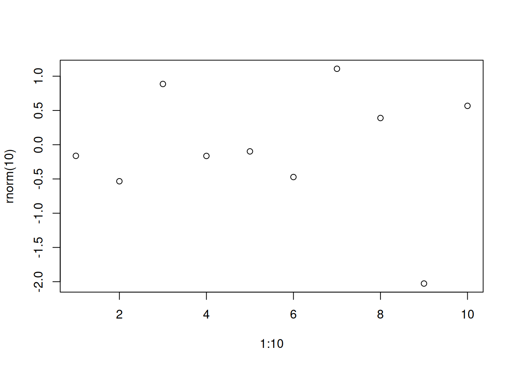
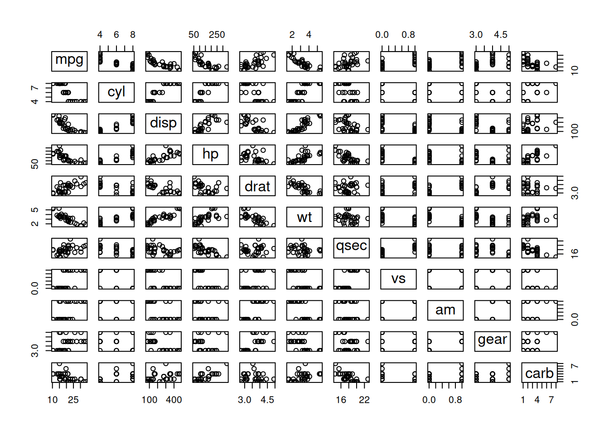

```{r}
#| fig-cap: Plot about cars data
#| lightbox:
#| group: r-graph
#| description: We see our cars data above
plot(cars)
```
This page tests the usual setup: Quarto’s lightbox is on for the document (lightbox: true), and only some images are marked for panzoom, with .panzoom or #| classes: panzoom. The markup is the same as in d-panzoom-selective, which has no lightbox.
The marked images should open the pan/zoom viewer; every other image should open Quarto’s lightbox, as in a-lightbox. Case 6’s first chunk has both classes: panzoom and #| lightbox: options on purpose: panzoom should win, so it doesn’t join GLightbox’s gallery. Case 8 (#| lightbox: false) gets neither. Case 9’s link should still work (images inside links are left alone).
Chilmark has some of the best beaches. credit: Chilmark Beach
Gingerbread cottages.

Description with math \(\int_0^1 x^2\,dx = 1/3\)
```{r}
#| label: fig-r-sub
#| fig-cap: "Two R subfigures."
#| fig-subcap: ["Pressure", "Cars"]
#| layout-ncol: 2
#| classes: panzoom
plot(pressure)
plot(cars)
```

This one also has classes: panzoom (conflict test).
```{r}
#| fig-cap: Simple demo R plot
#| classes: panzoom
#| lightbox:
#| group: r-graph
#| description: This is 1 to 10 plot
plot(1:10, rnorm(10))
```
This one has only the lightbox options.
```{r}
#| fig-cap: Plot about cars data
#| lightbox:
#| group: r-graph
#| description: We see our cars data above
plot(cars)
```
```{r}
#| classes: panzoom
#| fig-cap:
#| - Caption for first plot
#| - Caption for second plot
#| lightbox:
#| group: cars
#| description:
#| - Description for first graph
#| - Description for second graph
plot(mtcars)
plot(cars)
```

```{r}
#| fig-cap: mtcars, lightbox false
#| lightbox: false
plot(mtcars)
```
Some text with an inline image in the middle.
```{r}
#| label: fig-plain
#| fig-cap: A plain cross-referenced R figure.
image(volcano)
```The images in this example were used under the Unsplash license, view originals below: